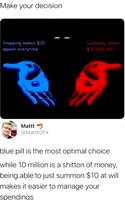

0
0
0

0
Seamus Blackley, one of the original founders of Xbox who helped convince Bill Gates and Steve Ballmer to back a console project more than 26 years ago, told GamesBeat in an interview that he believes Microsoft is quietly sunsetting the platform under the guise of an AI-driven leadership transition.
Microsoft recently announced that Asha Sharma, whose career has focused on AI and software as a service, will replace Phil Spencer as Xbox CEO, and that COO and president Sarah Bond is leaving the company. Blackley said he expects Sharma's role to be that of "a palliative care doctor who slides Xbox gently into the night," arguing that Satya Nadella's all-consuming bet on generative AI has turned every business unit -- Xbox included -- into a nail for the same hammer.
He compared the appointment to putting someone who doesn't like movies in charge of a major motion picture studio, and advised Sharma to either develop a genuine passion for games or find a way to leave the job soon.
Read more of this story at Slashdot.
An anonymous reader shares a report: Uber is one step closer to going airborne. On Wednesday, the company previewed its air taxi booking service ahead of an expected launch in Dubai later this year. The inaugural Uber Air program will let travelers book Joby Aviation's electric air taxis through a familiar process in the Uber app.
The experience of booking an air taxi will be much like reserving a four-wheeled Uber. In the app, after entering your destination, Uber Air will appear as an option for eligible routes. The Uber app will book a flight and an Uber Black to pick you up and drop you off at a Joby "vertiport." Joby's air taxis, built exclusively for city travel, can accommodate up to four passengers and luggage. (Uber says size and weight guidelines will be announced closer to launch.) The interior is about the size of an SUV and has "comfortable seating" with panoramic windows. They can travel up to 200 mph and have a range of up to 100 miles. Four battery packs and a triple-redundant flight computer are onboard for safety purposes.
Read more of this story at Slashdot.
Anthropic, the AI company that has long positioned itself as the industry's most safety-conscious research lab, is dropping the central commitment of its Responsible Scaling Policy -- a 2023 pledge to never train an AI system unless it could guarantee beforehand that its safety measures were adequate. "We didn't really feel, with the rapid advance of AI, that it made sense for us to make unilateral commitments ... if competitors are blazing ahead," chief science officer Jared Kaplan told TIME.
The overhauled policy, approved unanimously by CEO Dario Amodei and Anthropic's board, instead commits the company to matching or surpassing competitors' safety efforts and to delaying development only if Anthropic considers itself to be leading the AI race and believes catastrophic risks are significant.
The company also plans to publish detailed "Risk Reports" every three to six months and release "Frontier Safety Roadmaps" laying out future safety goals. Chris Painter, director of policy at the AI evaluation nonprofit METR, who reviewed an early draft, told TIME the shift signals that Anthropic "believes it needs to shift into triage mode with its safety plans, because methods to assess and mitigate risk are not keeping up with the pace of capabilities."
Read more of this story at Slashdot.
The United States installed a record 57 gigawatt hours of new battery storage on its electric grids in 2025, a nearly 30% increase over the prior year that arrived even as the Trump administration cut tax credits for wind and solar in last summer's One Big Beautiful Bill.
The figures come from a Solar Energy Industries Association report published Monday, which also projects the market will grow another 21% this year by adding 70 gigawatt hours in 2026 alone. Battery tax credits themselves survived the legislation largely intact, and the majority of last year's new installations were stand-alone systems not tied to specific solar projects.
In Texas, solar met more than 15% of electricity demand throughout the summer and beat out coal for the first time, and the SEIA report predicts the state will overtake California this year in total deployed storage. Supply chain restrictions reinforced by the bill and project cancellations could slow the pipeline this year, the report cautions.
Read more of this story at Slashdot.
A 10-week-old boy named Hugo has become the first baby born in the UK from a womb transplanted from a deceased donor, after his mother Grace Bell -- who was born without a viable womb due to a condition called MRKH syndrome, which affects one in every 5,000 women -- underwent a 10-hour transplant operation at The Churchill Hospital in Oxford in June 2024.
Hugo was born just before Christmas 2025, weighing nearly 7lbs, at Queen Charlotte's and Chelsea Hospital in west London, following IVF treatment and embryo transfer at The Lister Fertility Clinic. Bell's transplant is one of three completed so far as part of a UK clinical research trial that plans to carry out 10 such procedures from deceased donors, and Hugo is the first baby born from any of them.
Earlier in 2025, a separate effort produced baby Amy, the first UK birth from a living womb donation -- her mother had received her older sister's womb in January 2023. Globally, more than 100 womb transplants have been performed, resulting in over 70 healthy births.
Read more of this story at Slashdot.
Anthropic last week promoted Claude Code Security, a research preview capability that uses its Claude Opus 4.6 model to hunt for software vulnerabilities, claiming its red team had surfaced over 500 bugs in production open-source codebases -- but security researchers say the real bottleneck was never discovery.
Guy Azari, a former security researcher at Microsoft and Palo Alto Networks, told The Register that only two to three of those 500 vulnerabilities have been fixed and none have received CVE assignments. The National Vulnerability Database already carried a backlog of roughly 30,000 CVE entries awaiting analysis in 2025, and nearly two-thirds of reported open-source vulnerabilities lacked an NVD severity score.
The curl project closed its bug bounty program because maintainers could no longer handle the flood of poorly crafted reports from AI tools and humans alike. Feross Aboukhadijeh, CEO of security firm Socket, said discovery is becoming dramatically cheaper but validating findings, coordinating with maintainers, and developing architecture-aligned patches remains slow, human-intensive work.
Read more of this story at Slashdot.
Kalshi, the prediction market platform regulated by the Commodity Futures Trading Commission, has for the first time publicly disclosed the results of an insider trading investigation, naming an editor for YouTube's biggest creator as the offender.
The company identified Artem Kaptur, an editor for MrBeast, who it says traded around $4,000 on markets tied to the streamer and achieved "near-perfect trading success" on low-odds bets -- a pattern investigators flagged as suspicious. Kalshi froze Kaptur's account before he could withdraw any profits, fined him $20,000, suspended him for two years, and reported the case to the CFTC.
Read more of this story at Slashdot.
Tech companies ranging from 300-person startups to giants like Amazon, Google, Meta, Microsoft and Salesforce have moved beyond encouraging employees to use AI tools and are now actively tracking adoption and, in several cases, tying it to performance reviews. Google is factoring AI use into some software engineer reviews for the first time this year, and Meta's new performance review system will do the same -- it can track how many lines of code an engineer wrote with AI assistance.
Amazon Web Services managers have dashboards showing individual engineer AI-tool usage and consider adoption when evaluating promotions. About 42% of tech-industry workers said their direct manager expects AI use in daily work as of last October, up from 32% eight months earlier, according to AI consulting firm Section. At software maker Autodesk, CEO Andrew Anagnost acknowledged that some employees had been using initially blocked coding tools like Cursor stealthily -- and warned that AI holdouts "probably won't survive long term."
Read more of this story at Slashdot.
A hacker exploited Anthropic's AI chatbot to carry out a series of attacks against Mexican government agencies, resulting in the theft of a huge trove of sensitive tax and voter information, according to cybersecurity researchers. From a report: The unknown Claude user wrote Spanish-language prompts for the chatbot to act as an elite hacker, finding vulnerabilities in government networks, writing computer scripts to exploit them and determining ways to automate data theft, Israeli cybersecurity startup Gambit Security said in research published Wednesday.
The activity started in December and continued for roughly a month. In all, 150 gigabytes of Mexican government data was stolen, including documents related to 195 million taxpayer records as well as voter records, government employee credentials and civil registry files, according to the researchers.
Read more of this story at Slashdot.
DVD and Blu-ray sales have been in freefall for years, but the decline is slowing considerably as Gen Z buyers turn to physical media and drive a measurable uptick at video rental stores and retailers across the U.S.
Overall disc sales fell just 9% last year after dropping more than 20% in both 2023 and 2024, according to the Digital Entertainment Group, and U.S. consumers spent 12% more on 4K UHD Blu-rays in 2025 than the prior year. The Criterion Collection, a leading boutique Blu-ray label, confirmed significant year-over-year sales increases that its president credits to younger customers.
Vidiots, a video store in Los Angeles, averaged 170 rentals a day in January 2026 -- its biggest month ever -- after loaning about 22,000 discs total in 2023 and roughly 50,000 in 2024. Barnes & Noble reported DVD and Blu-ray sales growth of "mid-double digits" over the past year.
Read more of this story at Slashdot.
The screeching sound that Scotch tape makes when you rip it off a surface -- that fingernails-on-a-chalkboard noise most people try not to think about -- is produced by shock waves from micro-cracks that travel across the peeling tape at supersonic speeds, according to a new paper published in Physical Review E.
Researchers led by Sigurdur Thoroddsen of King Abdullah University in Saudi Arabia used simultaneous high-speed imaging and synchronized microphones to capture both the propagating fractures and the sound waves they generate in the surrounding air. The team's earlier work, in 2010, had identified a sequence of transverse cracks racing across the width of the adhesive during peeling, and a 2024 follow-up established a direct correspondence between those cracks and the screeching sound, but neither study pinpointed a mechanism.
The new findings show that a partial vacuum forms between the tape and the surface as each crack opens, and because the crack moves faster than air can rush in to fill the void, the vacuum travels along until it reaches the tape's edge and collapses into the stationary air outside, producing a discrete sound pulse.
Read more of this story at Slashdot.
Apple's forthcoming touch-screen MacBook Pro models -- the company's first-ever laptops to support touch input -- will feature the iPhone's Dynamic Island at the center top of their OLED displays and a new interface that dynamically adjusts between touch and point-and-click controls, according to a Bloomberg report citing people familiar with the plans.
The 14-inch and 16-inch models, code-named K114 and K116, are slated for release toward the end of 2026 and won't be part of Apple's product announcements in the first week of March. The redesigned interface brings up a contextual menu surrounding a user's finger when they touch a button or control, and enlarges menu bar items when tapped, adapting the available controls based on whether the input is touch or click.
Apple does not plan to position the machines as iPad replacements or describe them as touch-first; the physical design retains the full keyboard and large trackpad of the current MacBook Pro. Last year's Liquid Glass redesign in macOS Tahoe, which added more padding around icons and touch-optimized sliders in the control center, was partly groundwork for this shift.
Read more of this story at Slashdot.
An anonymous reader shares a report: Brian Merchant, writing for Blood in the Machine, reports that people across the United States are dismantling and destroying Flock surveillance cameras, amid rising public anger that the license plate readers aid U.S. immigration authorities and deportations.
Flock is the Atlanta-based surveillance startup valued at $7.5 billion a year ago and a maker of license plate readers. It has faced criticism for allowing federal authorities access to its massive network of nationwide license plate readers and databases at a time when U.S. Immigration and Customs Enforcement is increasingly relying on data to raid communities as part of the Trump administration's immigration crackdown.
Flock cameras allow authorities to track where people go and when by taking photos of their license plates from thousands of cameras located across the United States. Flock claims it doesn't share data with ICE directly, but reports show that local police have shared their own access to Flock cameras and its databases with federal authorities. While some communities are calling on their cities to end their contracts with Flock, others are taking matters into their own hands.
Read more of this story at Slashdot.
An anonymous reader shares a report: Japan's Fair Trade Commission raided Microsoft Japan's offices on Wednesday as part of an investigation into whether it improperly restricted customers of its Azure platform from using rival cloud services, a source with direct knowledge of the matter told Reuters.
The source said Japan's antitrust authorities would also be seeking clarification from Microsoft's parent company in the United States. Microsoft Japan is suspected of setting conditions that effectively shut out other services by limiting access to popular services on other cloud platforms, the source said.
Read more of this story at Slashdot.
HP has revealed that memory now accounts for 35% of the cost of materials it needs to build a PC, up from between 15 and 18% last quarter. And the company expects RAM's contribution will rise through the year. From a report: Speaking on the company's Q1 2026 earnings call, interim CEO Bruce Broussard said the company has secured long-term supply agreements for the year and also "qualified new suppliers [and] built in strategic inventory positions for key platforms and cut the time to qualify new material in half to accelerate our product configuration changes."
That sounds a lot like HP Inc is signing up new suppliers at a brisk pace. Broussard said the company has also "expanded lower-cost sourcing across our commodity basket, lowering logistics costs with agile end-to-end planning processes." The company is using its internal AI initiatives to power those new processes. The company is also "configuring our products and shaping demand to align the supply we have with our customer needs" and "taking targeted pricing actions to offset the remaining cost impact in close partnership with both our channel and direct customers."
Read more of this story at Slashdot.
The Information : Sources: Amazon plans to invest up to $50B in OpenAI, $35B of which could hinge on an IPO or AGI milestone; OpenAI is discussing custom models for Amazon — Amazon's decision to invest up to $50 billion in OpenAI could hang on whether OpenAI goes public or reaches a loosely defined milestone known …
The Economic Times : Mumbai-based digital payments processor BillDesk agrees to acquire the Indian business of Worldline for an equity value of ~$70M, set to close in H2 2026 — Billdesk is set to acquire the India payments business of French payment giant Worldline for an estimated equity value of $70 million.
Tim Anderson / The Register : A Cloudflare engineer rebuilt Next.js from scratch in one week using AI, reimplementing 94% of its API and spending $1,100 on Claude tokens — Uses Vite and Claude to sidestep Vercel lock-in — A Cloudflare engineer says he has implemented 94 percent of the Next.js API by directing Anthropic's Claude …
Reece Rogers / Wired : Open-source tool Scrapling gains traction with OpenClaw users who want their bots to scrape sites without permission and has 200K+ downloads since its release — An open source project called Scrapling is gaining traction with AI agent users who want their bots to scrape sites without permission.
Bloomberg : Nvidia says the US government granted it a license to ship a small number of H200 chips to Chinese customers, but it's unclear if Beijing will allow any imports — Nvidia Corp. said it secured a license to ship a small number of its less advanced H200 chips to customers in China …
Claude / @claudeai : Anthropic unveils scheduled tasks in Cowork, enabling Claude to complete recurring tasks at specific times automatically — New in Cowork: scheduled tasks. Claude can now complete recurring tasks at specific times automatically: a morning brief, weekly spreadsheet updates, Friday team presentations. [video]
Suzanne Smalley / The Record : The FTC says it won't enforce COPPA against companies using age verification tools as long as they use the collected data only to verify a user's age — The Federal Trade Commission (FTC) on Wednesday issued a policy statement advising industry that it will not bring enforcement actions …
The Information : OpenAI hires Meta AI researcher Ruoming Pang, who joined Meta from Apple about seven months ago for a pay package reportedly worth $200M+ over several years — OpenAI has hired a high-profile AI researcher at Meta Platforms who had joined the company from Apple about seven months ago, a spokesperson from OpenAI confirmed.
Lawrence Abrams / BleepingComputer : Cisco warns of critical SD-WAN bug that was actively exploited in zero-day attacks since 2023, as CISA and international partners issue emergency directives — Cisco is warning that a critical authentication bypass vulnerability in Cisco Catalyst SD-WAN, tracked as CVE-2026-20127 …
Paul Sandle / Reuters : The UK's Virgin Media O2 launches Europe's first satellite-to-mobile service, powered by Starlink and initially available for £3/month on select Samsung devices — Britain's Virgin Media O2 launched Europe's first satellite-to-mobile service on Thursday, bringing text messages …
Brody Ford / Bloomberg : Filing: C3.ai plans to cut ~26% of its workforce; the company had ~1,200 employees as of April 2025; C3.ai shares drop 20%+ after hours on weaker FY guidance — C3.ai Inc., a maker of data analysis software, is cutting about a quarter of its workforce after the appointment of a new chief executive officer.
The Information : Sources: Saronic, which is building autonomous warships, is raising up to $1.5B at a ~$7.5B pre-money valuation; Saronic was last valued at $3.4B a year ago — Saronic, a startup that builds autonomous warships, is raising as much as $1.5 billion in a financing that would value the company …
Jonathan Stempel / Reuters : New York's AG sues Valve over its use of loot boxes, accusing the game developer of violating state gambling laws and threatening to addict children to gambling — New York's attorney general sued Valve, a video game developer whose franchises include Counter-Strike, Team Fortress and Dota …
Rebecca Szkutak / TechCrunch : Alphabet's Intrinsic, which builds AI models and software for industrial robots, joins Google; it will remain a distinct entity and work with Google DeepMind — Google is moving further into physical AI by bringing a familiar robotics software platform under its wing.
Jaspreet Singh / Reuters : Snowflake reports Q4 product revenue up 30% YoY to $1.23B, vs. $1.18B est., and forecasts Q1 and FY 2027 product revenue above estimates — Snowflake (SNOW.N) forecast fiscal 2027 product revenue above Wall Street estimates on Wednesday, a sign that new clients are turning …